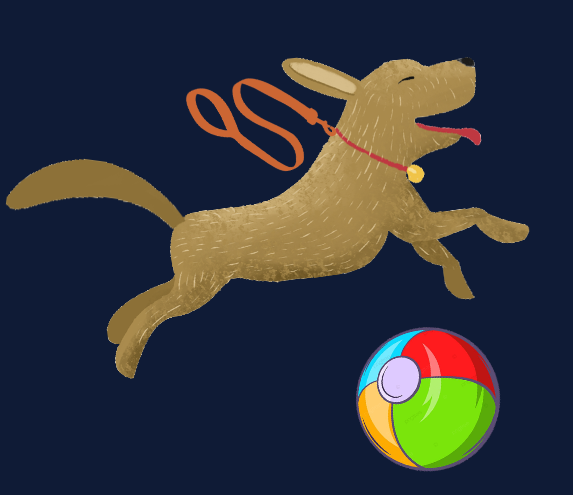
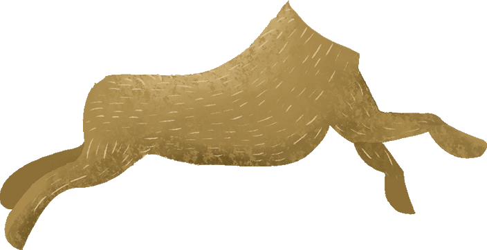
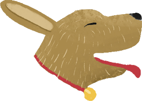
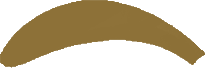
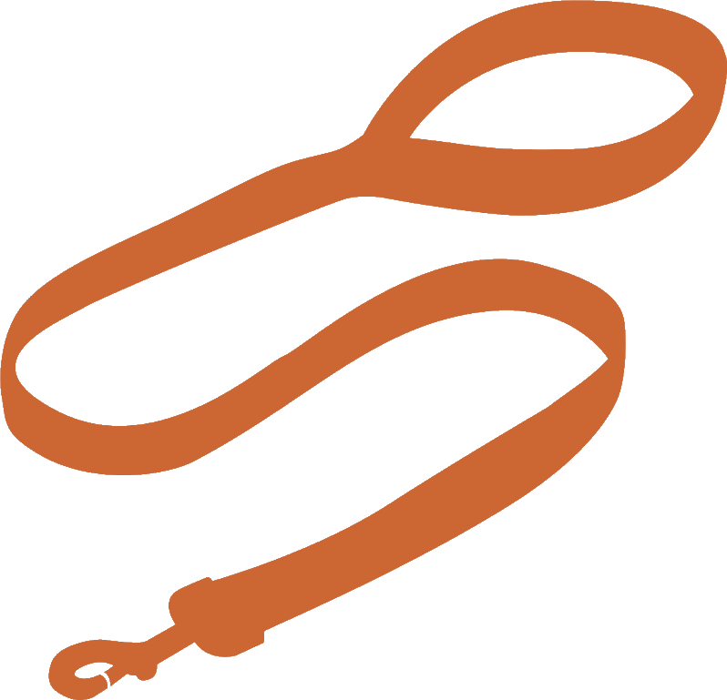
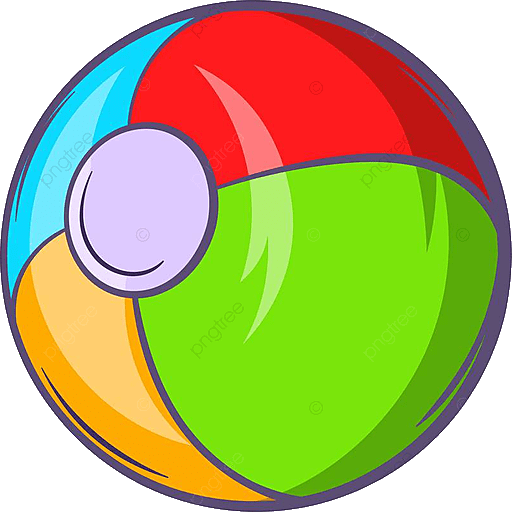

ЛР-5: перетаскивание и поворот — «Собрать животное»
Перетащи детали. Тело ставь куда угодно — при отпускании оно становится якорем. Остальные детали прищёлкнутся к телу при совпадении положения и угла. Вращение — Q/E или колесо мыши. Сброс — R. Калибровка относительных смещений — Shift+S.

Разложено
Собрать животное
Готово!




